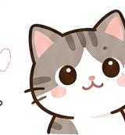
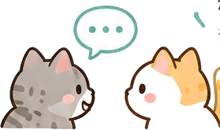
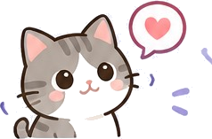
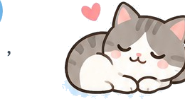

領養流程與條件
— 讓我們一起，找到最適合的家！—
-
1
認識貓咪
先在網站或官方臉書看看喜歡的貓咪，想想適合你的生活方式。

我在等
有緣的你！ -
2
私訊詢問
看到喜歡的貓咪後，請私訊粉專，我們會告訴你牠的詳細狀況和生活情形。
告訴我
你想了解的
問題吧！ -
3
溝通與評估
我們會跟你聊聊你的規劃、家人的想法、環境狀況。這一步通常不只一次對話。

確認你們
都準備好了！ -
4
見面
雙方都覺得合適，再安排跟貓咪見面。

第一次見面
好緊張～
也好期待！ -
5
完成領養
後續的手續與約定，依貓窩的規定辦理。
恭喜你
成為牠的
家人！ -
6
之後也歡迎聯絡
貓咪到新家之後有任何狀況，隨時可以回來問我們。

我們
都在！
每一隻貓咪，都值得被愛
領養條件
詳細的領養條件請直接私訊貓窩官方臉書詢問，我們會依照每隻貓的狀況跟你說明。
想詢問領養
請透過貓窩官方臉書私訊我們。為了保護彼此的個人資料，官網不設線上表單。